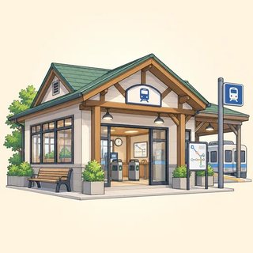
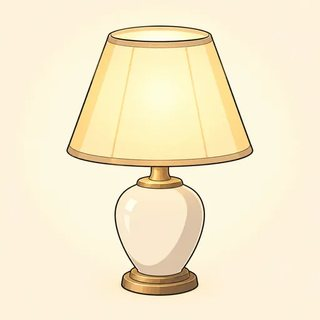

Module 2
Reading Between the Lines
Infer it. Play with it. Picture it.
The gap between said and meant
- 2.1 Implicature & inference: "He's very punctual." · "Why are you still behind?" · reportedly
- 2.2 Irony, humor & wordplay: a bit of a problem · Oh, fantastic · BAKERY RISES TO THE OCCASION
- 2.3 Metaphor & imagery: she shot down my idea · time is a thief · one image, one frame
"It's cold in here."


Flout a maxim → imply a meaning
| Quantity · enough | "Is she good?" "She's very punctual." → nothing better to say |
|---|---|
| Quality · true | In a storm: "Lovely day out." → a disaster |
| Relation · relevant | "My presentation?" "Shall we get coffee?" → I'd rather not say |
| Manner · clear | "Did they sing?" "They produced sounds corresponding to the score." → barely |
Spot the trigger. Refuse the premise.
| Trigger | Takes for granted |
|---|---|
| Why are you still behind? | you were behind |
| Are you late again? | you've been late before |
| Even the intern saw it. | the intern was least likely |
| the error in your figures | there is an error |
| Did you manage to finish? | it was difficult |
That question assumes X, which isn't the case. What I can tell you is…
Diction · omission · juxtaposition · distance
The company's much-anticipated app, which reportedly crashed twice during the launch, was described by its CEO as "a game-changer." She declined to take questions. A modest crowd of some forty attended; the press release put the figure at "well over two hundred."
"It's certainly comprehensive."
Sam: "It's clear a great deal of work went into it. It's certainly comprehensive."
Priya: It's the only adjective in the email. What else?
Sam: "A slightly different direction for now." And: "Has finance checked the budget yet?"
Priya: A polite no. That "yet" assumes it should have been checked. And comprehensive? Too long. Deniably.
Implicature Lab
- Round 1 Decode: email · reference · review · minutes. Said / Meant / Mechanism + the real message in one line
- Round 2 Encode: draw a card, write 4–6 lines that imply it. Never state it.
- Round 3 Peer test: "What's the real message?" · pass · too buried · too bald
Can you state the message? (Never.)
Show your card? (Only after the test.)
Whose opinion is it? (The card's.)
Saying the opposite


Irony · sarcasm · less · more
| Irony | the opposite, often gentle: "Perfect picnic weather." (pouring rain) |
|---|---|
| Sarcasm | irony + a target + an edge: "Oh, nice parking." |
| Understatement | a bit of a problem · not our finest hour · a few reservations |
| Hyperbole | a mountain of paperwork · on hold for a lifetime (keep it rare) |
Find the pivot
| Pun | I used to be a banker, but I lost interest. |
|---|---|
| Malapropism | a real escape goat → scapegoat |
| Spoonerism | a well-boiled icicle ← a well-oiled bicycle |
BAKERY RISES TO THE OCCASION
SWIMMING POOL PLAN MAKES A SPLASH
BEEKEEPERS CREATE A BUZZ
Setup → incongruity → punchline
Maya: How did it go? I heard the projector caught fire.
Dev: Oh, it went swimmingly.
Maya: And the client?
Dev: Let's just say they had a few reservations.
Maya: So, not our finest hour.
Dev: Next time, a flip chart. At least paper has the decency to burn quietly.
Wit Workshop
- Round 1 Headline Desk: 2 stories → 2 pun headlines (7 words max.) + the pivot word
- Round 2 Write 80–120 words: a mock review or a wry anecdote (irony · understatement or hyperbole · wordplay)
- Round 3 Gap and Target review: the gap · the signals · who pays? · one cut
Must you read it aloud? (No: someone else can, or just show it.)
We think in metaphors




Name it · map it
| Metaphor | Her argument was a fortress. |
|---|---|
| Simile | Fear rose like cold water. |
| Metonymy | The front desk called. |
| Synecdoche | All hands on deck. |
| Personification | The old house groaned. |
| ARGUMENT IS WAR | defend · attack · shoot down · win |
|---|---|
| TIME IS MONEY | spend · save · budget · waste |
| IDEAS ARE FOOD | half-baked · digest · swallow |
| LIFE IS A JOURNEY | crossroads · dead end |
| UP IS GOOD | spirits rose · feeling down |
Dead · cliché · live · mixed
| Dead | the leg of the table · the foot of the hill (invisible: leave it) |
|---|---|
| Cliché | think outside the box · at the end of the day (tired: refresh or re-coin) |
| Live | "the fog comes on little cat feet" (we see it) |
| Mixed |
Figurative Language Studio
- Round 1 Analyze a passage: controlling metaphor · supporting images · the intruder · the cliché
- Round 2 Write 120–150 words: one subject + one source domain, 4+ sentences, 2–3 supporting images
- Round 3 Name the frame: read silently, write first, then talk
When do you talk to the writer? (After writing.)
Can't name the frame? (Tell them: it needs to be stronger.)
Your own life? (Optional.)
Module 2 done
- "He's very punctual." · Why are you still behind? → That assumes… · reportedly
- a bit of a problem · Oh, fantastic. · BAKERY RISES TO THE OCCASION
- She shot down my idea · time is a thief · one image, one frame
Homework: online lessons 2.1–2.3 with 🔊. Next: Module 3, discourse markers, cohesion & synthesis.